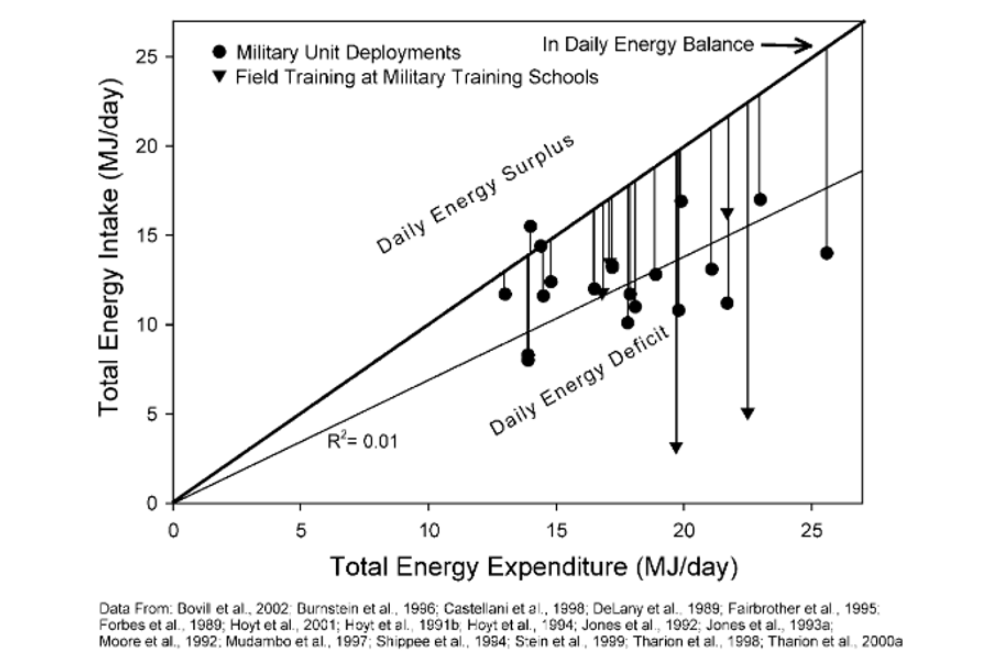
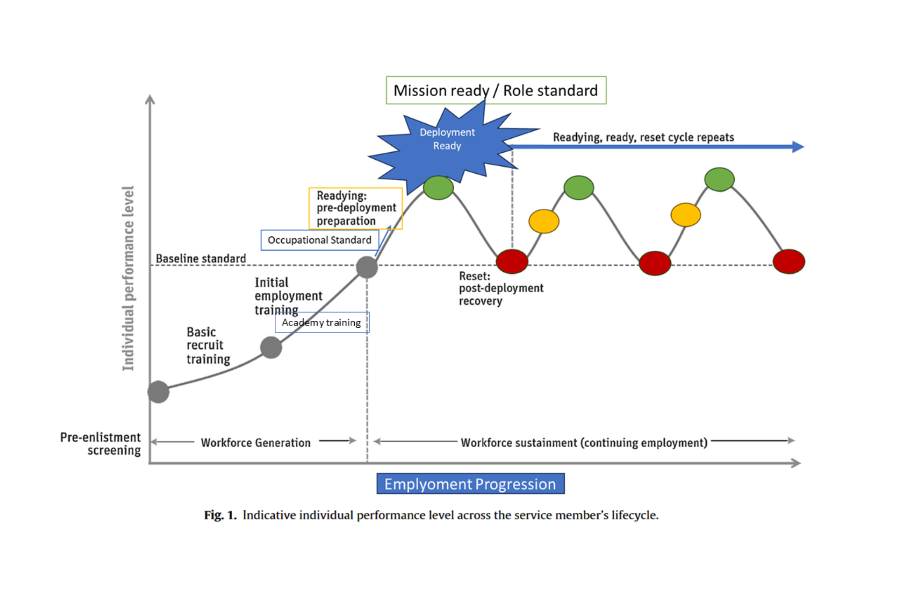
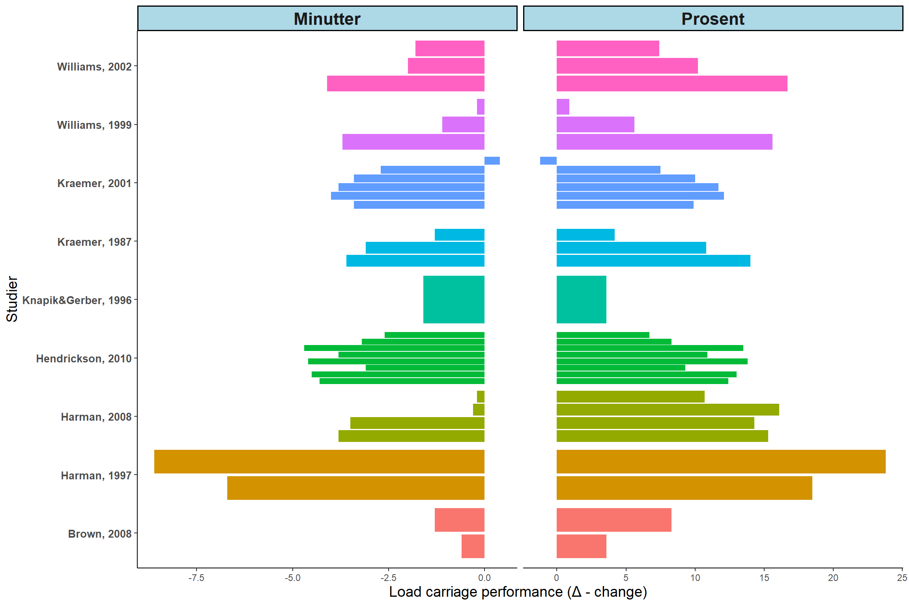
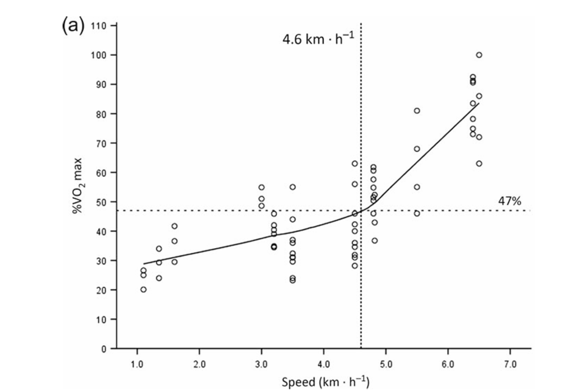

2 Physical Employment Standards
2.1 Krav til fysisk form i militære arbeidsoppgaver
Majoriteten av internasjonale forsvarsgrener har implementert eller utviklet Physical Employment Standards (PES). Disse standardene er utformet for å reflektere de typiske jobbspesifikke kravene i militære stillinger og er basert på en analyse av de fysiske og mentale belastningene soldaten vil møte i sin operative rolle (Drain and Reilly 2019; NATO 2019). De aller fleste militære stillinger stiller krav til fysisk kapasitet. Fysisk kapasitet er soldatens fundament og inngår som en av de grunnleggende soldat ferdighetene. Men nivået av fysisk kapasitet kan variere avhengig av soldatens funksjon (stilling) og oppdrag.
NATO. 2019. “Combat Integration: Implications for Physical Employment Standards.”
Figure 2.1 viser hvordan en soldat utvikler sin fysiske kapasitet/prestasjonsevne gjennom utdanning og trening for å imøtekomme de operasjonelle kravene som møter soldaten i stilling/operasjoner (se figur tekst).

Drain, Jace R., and Tara J. Reilly. 2019. “Physical Employment Standards, Physical Training and Musculoskeletal Injury in Physically Demanding Occupations.” Edited by Gemma S. Milligan, Sam D. Blacker, Pieter E. H. Brown, and Andrew G. Siddall. Work 63 (4): 495–508. https://doi.org/10.3233/wor-192963.
2.2 Forflytning og energiomsetning
Soldaten stilles ofte ovenfor krav som innebærer både tunge løft og det å kunne bære betydelig vekt over lengre distanser og i spesifikke perioder, som under deployering. Det er blant annet rapportert at soldater i løpet av et år under deployering i gjennomsnitt bærer ca 22 kg mere vekt på kropp (2. linje), enn under garnison tjeneste (Nindl et al. 2013). Videre viser rapporter en økning i fysiske tunge arbeidsoppgaver på mellom 12-22 prosent under deployeringsperioder sammenlignet med garnison tjeneste (Boye et al. 2017). Dette innebærer at soldaten må være fysisk forberedt på å møte de økte kravene som følger med overgangen fra garnisons tjeneste til deployering og operasjoner.
Nindl, B. C., J. W. Castellani, B. J. Warr, M. A. Sharp, P. C. Henning, B. A. Spiering, and D. E. Scofield. 2013. “Physiological Employment Standards III: Physiological Challenges and Consequences Encountered During International Military Deployments.” Journal Article. Eur J Appl Physiol 113 (11): 2655–72. https://doi.org/10.1007/s00421-013-2591-1.
Boye, M. W., B. S. Cohen, M. A. Sharp, M. C. Canino, S. A. Foulis, K. Larcom, and L. Smith. 2017. “U.S. Army Physical Demands Study: Prevalence and Frequency of Performing Physically Demanding Tasks in Deployed and Non-Deployed Settings.” J Sci Med Sport 20 Suppl 4 (November): S57–s61. https://doi.org/10.1016/j.jsams.2017.08.014.
Tharion, W. J., H. R. Lieberman, S. J. Montain, A. J. Young, C. J. Baker-Fulco, J. P. Delany, and R. W. Hoyt. 2005. “Energy Requirements of Military Personnel.” Appetite 44 (1): 47–65. https://doi.org/10.1016/j.appet.2003.11.010.
Murphy, N. E., C. T. Carrigan, J. Philip Karl, S. M. Pasiakos, and L. M. Margolis. 2018. “Threshold of Energy Deficit and Lower-Body Performance Declines in Military Personnel: A Meta-Regression.” Sports Med 48 (9): 2169–78. https://doi.org/10.1007/s40279-018-0945-x.
I tillegg til at soldatens fysiske form må imøtekomme den økte fysiske belastningen ved en deployeringsperiode, øker også den daglige energiomsetningen. Økt energiforbruk blir en direkte konsekvens av å forlytte seg med økt vekt på kropp (i.e oppakninger 2-4 linje). Data fra feltøvelser, hvor marsj med oppakning er en stor del av øvelsesaktiviteten, viser at energiomsetningen kan komme opp mellom \(\sim\) 3100-6300 kcal og \(\sim\) 2300-5500 kcal per døgn hos hhv. mannlige og kvinnelige soldater (Tharion et al. 2005; Murphy et al. 2018).
Dersom soldaten over en periode har økt energiomsetning i forbindelse med feltøvelser eller reelle operasjoner, samtidig som energiinntaket ikke er balansert i forhold energiforbruket, øker risikoen for et daglig energiunderskudd (Figure 2.2). Daglig energiunderskudd kan overtid påvirke soldaten negativt i form av redusert fysisk-og mental prestasjonsevne (Montain and Young 2003; Nindl et al. 2007; Ojanen T, Jalanko P, and Kyrolainen 2018). Sett i lys av forflytningsaspektet, kan energiunderskuddet påvirke soldatens evne til å forflytte seg bl.a effektivt og daglig tilbakelagt distanse. I Figure 2.2 illustreres det hvor stort det daglige energiunderskudded kan være målt under feltøvelser (\(\blacktriangledown\)) og under deployering (\(\bullet\)).
Montain, S. J., and A. J. Young. 2003. “Diet and Physical Performance.” Appetite 40 (3): 255–67.
Nindl, B. C., B. R. Barnes, J. A. Alemany, P. N. Frykman, R. L. Shippee, and K. E. Friedl. 2007. “Physiological Consequences of U.S. Army Ranger Training.” Med Sci Sports Exerc 39 (8): 1380–87. https://doi.org/10.1249/MSS.0b013e318067e2f7.
Ojanen T, Jalanko P, and H. Kyrolainen. 2018. “Physical Fitness, Hormonal, and Immunological Responses During Prolonged Military Field Training.” Physiol Rep 6(17). https://doi.org/10.14814/phy2.13850].
2.3 Oppakning under forflytning (marsj)
Faktorer som vekten på oppakningen, fordelingen/plasseringen av vekten på kropp, terrenget soldaten beveger seg i (underlag, stigninger ect.), marsj hastighet vil påvirke kroppen fysisk og fysiologisk på flere måter. Avhengig av hvor stor grad hver av disse faktorene påvirker, øker det kravet til hjerte-kar systemet, metabolismen og det nevromuskulæresystemet (Joseph J. Knapik, Reynolds, and Harman 2004).
Fallowfield, Joanne L., Sam D. Blacker, Mark E. T. Willems, Trish Davey, and Joseph Layden. 2012. “Neuromuscular and Cardiovascular Responses of Royal Marine Recruits to Load Carriage in the Field.” Applied Ergonomics 43 (6): 1131–37. https://doi.org/10.1016/j.apergo.2012.04.003.
Lyons, Jason, Adrian Allsopp, and James Bilzon. 2005. “Influences of Body Composition Upon the Relative Metabolic and Cardiovascular Demands of Load-Carriage.” Occupational Medicine 55 (5): 380–84. https://doi.org/10.1093/occmed/kqi087.
Rayson, M., D. Holliman, and A. Belyavin. 2000. “Development of Physical Selection Procedures for the British Army. Phase 2: Relationship Between Physical Performance Tests and Criterion Tasks.” Ergonomics 43 (1): 73–105. https://doi.org/10.1080/001401300184675.
Tidligere studier har vist moderat til sterk assosiasjon mellom marsjprestasjon med oppakning og aerob-og muskelkapasitet og kroppssammensetning. For eksempel, har \(\text{VO2}_\text{max}\) data, både absolutt og relativt, vist sammenheng med marsjprestasjon med både tung (20-45 kg, Fallowfield et al. 2012; Terho, Vaara, and Kyrolainen 2018) og lettere (15-25kg, Lyons, Allsopp, and Bilzon 2005) oppakning. Likeledes for muskelstyrke, har det blitt observert assosiasjon mellom soldatens maksimale-og utholdendestyrke og marsjprestasjon (med oppakning 15-25 kg, Rayson, Holliman, and Belyavin 2000). Videre har maksimal styrke i overkroppen vist en sterk og positiv sammenheng med marsjprestasjon med både moderat (29 kg) og tung (45 kg) oppakning, hvor både maskstyrken og den utholdendestyrken i beina ikke viste denne sammenhengen (Terho, Vaara, and Kyrolainen 2018).
Kort oppsummert viser litteraturen en tydelig indikasjon at god styrke-og utholdenhetskapasitet er essensielle fysiologiske egenskaper som bidrar til å forbedre din forflytningsevne med oppakning. Samtidig, bør soldaten også utvikle sin overkroppsstyrke, særlig hvis overkroppsstyrken i utgangspunktet er “lav” (relativt i forhold til beinstyrken), da dette kan påvirke bl.a soldatens arbeidsøkonomi gjennom økt overkroppsstabilitet under bæring av tung sekk (J. J. Knapik et al. 2012; Terho, Vaara, and Kyrolainen 2018). Alt i alt, et treningsprogram bestående av både styrke og utholdenhet sammen med jevnling marsjtrening med oppakning gir størst fremgang i soldatens marsjprestasjon. Dette støttes entydig i treningsstudier gjort på soldater.
Terho, A, J. P Vaara, and H Kyrolainen. 2018. “Effects of Two Different Loads on Cardiorespiratory Functions During Simulated Load Carriage Exercises.” CISM Sport Science Abstract Research Line: Psychophysiological Military Fitness and Operational Readiness. https://www.milsport.one/media s/fdvprfiles.php?d=ZmljaGllcnM=&f=Q0lTTV9TcG9ydF9TY2 llbmNlX0Fic3RyYWN0X1RoZXJvXzIwMTgucGRm&s=0e6739 7e61f19199e65b9db611c8722a.
2.3.1 Treningsstudier
Det er gjennomført flere studier hvor det er målt prestasjonsevne med oppakning etter en treningsintervensjon (se Figure 2.3). Treningsintervensjonene har typsik bestått av styrke eller utholdenhetstrening, samtidig styrke-og utholdenhetstrening (concurrent), concurrent + spesifikk marsjtrening med oppakning, samt fokus på over- og/eller underkroppstyrketrening. Sett under ett, er det gode effekter av både styrke og utholdenhetstrening på marsjprestasjon. Men å inkludere “progressive load-carraige” trening som en del av treningsprogrammet, er det observert betydelig større treningseffekter (Harman et al., 1997, 2008, Williams et al., 1999,2002). Så det å inkludere mer spesifikk trening bidrar til å forbedre din marsjprestasjons med oppakning, når det sammenlignes med bare å fokusere på en av modalitetene (styrke/utholdenhet). Dette kan da relateres til spesifistets prinsippet (et av treningsprinsippene). Spesifistet prinsippet sier noe om å trene på det man skal bli god på eller omformulert til forsvaret; train as you will fight. Å trene på en ferdighet man vil bli god i innebærer å gjennomføre det gjentakende ganger. Gjentakaende trening hvor man repeterer bevegelsesmønsteret i en gitt arbeidsoppgave (i.e. Load Carriage), gjør at det nevromuskulære systemet primes for den spesifikke arbeidsbevegelsen. Denne “primingen” av det nevromuskulæresystemet kan bidra til at kroppen bedre klarer å opprettholde kraftutviklingen (over tid). Marsj med oppakning vil dermed bli relativt lettere å gjennomføre (på en gitt intensitet) med soldatens optimaliserte bevegelsesmønster (J. J. Knapik et al. 2012; Vaara et al. 2022). Videre kan gjentatte gjennomføringer/treninger med oppakning også redusere skaderisikoen (Schuh-Renner et al. 2017).
Figure 2.3 viser studier som har gjennomført treningsintervensjoner med en varighet fra 4 til 12 uker. Effekten av de ulike treningsprotokollene, nevnt i forrige avsnitt, på marsjprestasjon er primært evaluert i tid brukt på en 3.2 km test. Den økologiske validiteten kan diskuteres i forhold til en slik evalueringstest, da dette er en kort test, mens i virkligheten forlytter soldaten seg over lengre distanser og tid med oppakning. Likevel er det konsensus at systematisk trening og valg av treningsfokus (overkropp vs. underkropp, marsj trening, concurrent trening osv.), kan optimalisere soldatens marsjprestasjon og bør inngå i soldatens treningsplan.

Knapik, J. J., E. A. Harman, R. A. Steelman, and B. S. Graham. 2012. “A Systematic Review of the Effects of Physical Training on Load Carriage Performance.” J Strength Cond Res 26 (2): 585–97. https://doi.org/10.1519/JSC.0b013e3182429853.
- For mer info om dataene brukt i figuren klikk her: Linken går til min github brukerkonto.
- Deretter last ned load_carriage.xlsx filen.
Anbefalinger som kan bidra til å forbedre din marsjprestasjon med oppakning (ytterligere lesning se: Vaara et al. 2022): Styrke- og utholdenhetstrening bør prioriteres som grunnleggende komponenter i treningsprogrammer for soldater, da dette legger et solid grunnlag for din marsjprestasjon. Marsjtrening bør være en regelmessig del av treningsprogrammet og bør planlegges gjennom periodisering for å optimalisere både tilpasning og restitusjon. Samtidig bør totalvolumet av marsjtrening begrenses for å redusere skaderisikoen, da stort volum av marsj kan øke skaderrisikoen (Schuh-Renner et al. 2017). Oppsummert: anbefalingene understreker belastningstyring ved å kontrollere treningsvolum gjennom blant annet å periodisere fokuset på marsjtreningen, samt inkludere styrke og utholdenhetstrening (Joseph J. Knapik, Reynolds, and Harman 2004; Heilbronn et al. 2020).
Vaara, J. P., H. Groeller, J. Drain, H. Kyröläinen, K. Pihlainen, T. Ojanen, C. Connaboy, M. Santtila, P. Agostinelli, and B. C. Nindl. 2022. “Physical Training Considerations for Optimizing Performance in Essential Military Tasks.” Eur J Sport Sci 22 (1): 43–57. https://doi.org/10.1080/17461391.2021.1930193.
Schuh-Renner, Anna, Tyson L. Grier, Michelle Canham-Chervak, Veronique D. Hauschild, Tanja C. Roy, Jeremy Fletcher, and Bruce H. Jones. 2017. “Risk Factors for Injury Associated with Low, Moderate, and High Mileage Road Marching in a U.S. Army Infantry Brigade.” Journal of Science and Medicine in Sport 20 (November): S28–33. https://doi.org/10.1016/j.jsams.2017.07.027.
Knapik, Joseph J., Katy L. Reynolds, and Everett Harman. 2004. “Soldier Load Carriage: Historical, Physiological, Biomechanical, and Medical Aspects.” Military Medicine 169 (1): 45–56. https://doi.org/10.7205/MILMED.169.1.45.
Heilbronn, B. E., K. Doma, D. Gormann, M. Schumann, and W. H. Sinclair. 2020. “Effects of Periodized Vs. Nonperiodized Resistance Training on Army-Specific Fitness and Skills Performance.” J Strength Cond Res 34 (3): 738–53. https://doi.org/10.1519/jsc.0000000000003029.
2.4 To viktige faktorer som påvirker energiforbruket ved forlyttning
2.4.1 Plassering av vekt i sekken og Intensitet under forflytning.
Hvor du plasserer vekten i sekken vil også påvirke arbeidskravet og energiforbruket ved marsj. Enkelt forklart er det mest energiøkonomiske å plassere vekten tett på kroppens massetyngdepunkt (Legg and Mahanty 1985). Har du en dagsmarsj i flatt terreng vil det være hensiktsmessig å plassere hovedvekten tett på midtryggen. Beveger soldaten seg i mer oppoverbakker eller variert lende, kan det være en fordel å plassere hovedvekten mer i bunnen av sekken.
Legg, S. J., and A. Mahanty. 1985. “Comparison of Five Modes of Carrying a Load Close to the Trunk.” Ergonomics 28 (12): 1653–60. https://doi.org/10.1080/00140138508963301.
En annen faktor som spiller inn på din marsjprestasjon er intensiteten under marsj. Under lengrevarende marsj anbefaler studier at intensiteten ikke bør overstige \(\sim 45-47 \%\ \text{VO2}_\text{max}\). Er marsj intensiteten over denne terskelen, som en konsekvens av økende marsjhastighet og/eller oppakning, øker energifobruket i et mye større omfang. Konsekvensen er at trøtthet/fatigue inntreffer på et tidligere tidspunkt (Boffey et al. 2019). Dette illustreres i Figure 2.4, hvor man etter å ha passert \(\sim 47\% \text{VO2}_\text{max}\) øker O2 kravet (y-aksen) betraktelig (nesten eksponentielt) i forhold til økende intensitet (x-aksen) . For å holde en intensitet som er i underkant av denne terskelen kan en tommelfingerregel være å holde seg primært rundt 11 på Borg-skala (Borg skala). Videre vil utholddenhetstrening hvor \(\text{VO2}_\text{max}\) økes, gjøre at din marsj hastighet tilsvarende \(\sim 47 \%\ \text{VO2}_\text{max}\) sannsynligvis blir forbedret.

Boffey, David, Idan Harat, Yftach Gepner, Cheyanne L Frosti, Shany Funk, and Jay R Hoffman. 2019. “The Physiology and Biomechanics of Load Carriage Performance.” Military Medicine 184 (1-2): e83–90. https://doi.org/10.1093/milmed/usy218.
Avsluttende anbefaling: med bakgrunn i litteraturen og det vi har gått gjennom i dette teoriavsnittet vil et treningsregime med styrke- og utholdenhet med fokus på 1 ukentlig marsj med oppakning i 8-12 uker sannynligvis gjøre deg mer forbredt fysiologisk (og mentalt) til å forflytte deg med oppakning under øvelser eller deployering. En mesosyklus (en blokk i din treningsplan) med økt fokus på marsj med oppakning vil dermed være en viktig brikke i å optimalisere dine operative evner.
2.4.2 For ytterligere lesning
- Link til Militær fysisk trening 1 kompendium: Linken går til forsvaret.no
- Se også referanselisten for siterte artikler